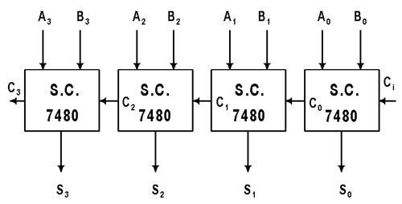

EL sumador es un circuito digital que realiza la adición de números. En muchas computadoras y otros tipos de procesadores se utilizan sumadores en las unidades aritméticas lógicas. También se utilizan en otras partes del procesador, donde se utilizan para calcular direcciones, índices de tablas, operadores de incremento y decremento y operaciones similares.
Aunque los sumadores se pueden construir para muchas representaciones numéricas, tales como decimal codificado en binario o exceso-3, los sumadores más comunes funcionan en números binarios. En los casos en que se utiliza el complemento a dos o el complemento a uno para representar números negativos, es trivial modificar un sumador para convertirlo en un sumador-restador. Otras representaciones de números con signo requieren más lógica alrededor del sumador básico.
Y este se divide en varias partes
Sumador Binario
suma dos dígitos binarios simples A y B, denominados sumandos, y sus salidas son Suma (S) y Acarreo (C). La señal de acarreo representa un desbordamiento en el siguiente dígito en una adición de varios dígitos. El diseño más simple de semisumador, representado a la derecha, incorpora una puerta XOR para S y una puerta AND para C. Dos semisumadores pueden ser combinados para hacer un sumador completo, añadiendo una puerta OR para combinar sus salidas de acarreo.
Sumador completo
Un sumador completo suma números binarios junto con las cantidades de acarreo. Un sumador completo de un bit añade tres bits, a menudo escritos como A, B y Cin siendo A y B son los sumandos y Cin es el acarreo que proviene de la anterior etapa menos significativa.El sumador completo suele ser un componente de una cascada de sumadores, que suman 8, 16, 32, etc. números binarios de bits. El circuito produce una salida de dos bits, al igual que el semisumador, denominadas acarreo de salida (Cout) y suma S.
